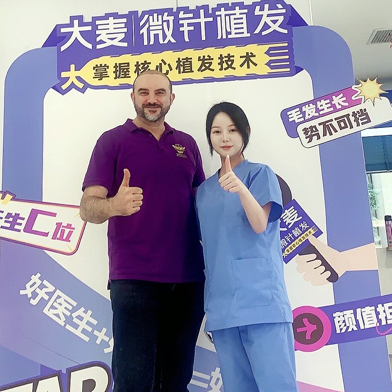
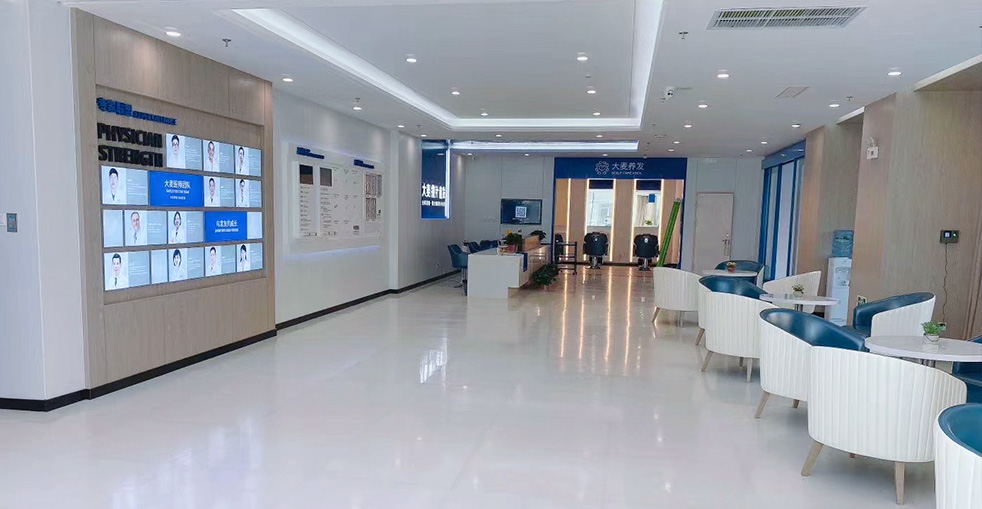
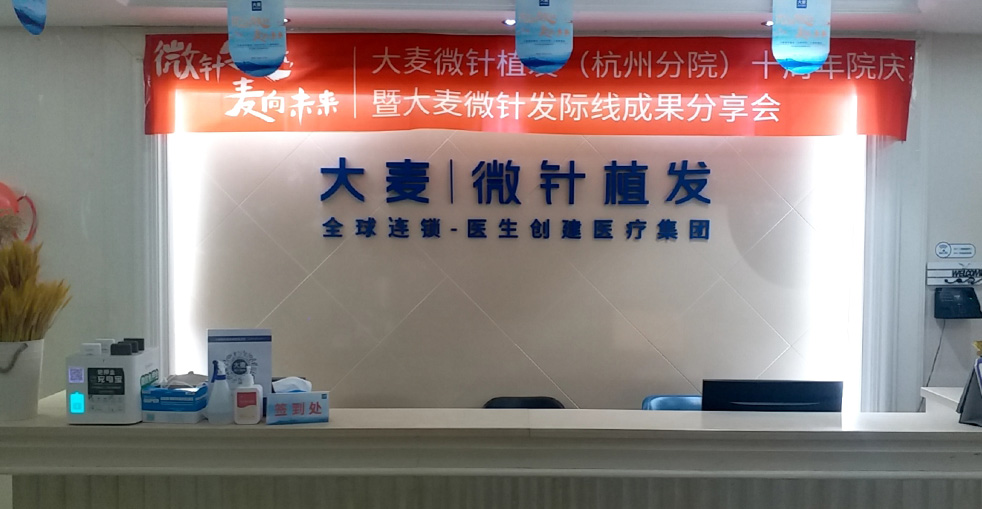

運用先進微針技術進行個人化髮際線設計，達到自然持久效果
我們的髮際線移植手術是毛髮修復的黃金標準。擁有超過18年經驗和10萬+成功案例，我們專精於打造自然外觀的髮際線，完美搭配您的面部特徵，恢復年輕外貌。

根據面部比例和黃金比例進行個人化髮際線設計
6步流程，確保最佳效果和舒適體驗
專家評估並根據您的面部特徵、年齡和目標進行定制化髮際線設計
運用溫和FUE技術從頭皮後部/側部提取健康供髮毛囊
專業處理和分類毛囊，確保最佳放置
按照自然頭髮生長方向和密度進行精準切口
運用專利植入筆進行微針植入，確保完美效果
全面護理指導和12個月跟蹤計劃
為什麼我們的髮際線移植能夠帶來自然、藝術化且持久的效果
我們的醫師首先是藝術家，其次才是技術人員。運用三庭五眼方法，他們根據您的面部特徵、年齡和種族特點打造髮際線，確保效果完全自然並提升整體外觀。
我們專精於創建細微、羽毛狀的過渡區，使植髮效果難以察覺。專利微針技術使我們能夠精準放置單個毛囊，從髮際線到髮頂形成自然漸變密度。
每個毛囊都以與您自然頭髮生長完全相同的角度、方向和深度植入。360°控制確保移植的頭髮完全像原生頭髮一樣生長，無縫融合，效果讓人無法察覺。
行業領袖，實證效果
自2006年起成為微針植髮技術的先驅和領導者
遍布中國各大城市，均採用相同高標準
創新微針和植入筆技術帶來卓越效果
深受全球患者信賴，帶來改變人生的效果
全程為國際患者提供英語支援
最先進設施和嚴格安全協議，讓您安心
見證我們患者的驚人轉變


與滿意患者的珍貴時刻

對效果非常滿意

非常滿意

感覺很棒

專業服務

對結果滿意

明智選擇

完美轉變

感覺很棒
來自全球滿意患者的真實反饋
"髮際線後退困擾我多年，做了髮際線植髮後整個人年輕了十歲！髮際線設計考慮到我的臉型比例，效果超自然！"
"髮際線後退讓我看起來比實際年齡老很多。醫師根據我的臉部比例精心設計髮線，術後效果非常自然！在Google查了髮際線植髮費用比較，這家CP值最高！"
"在Google查了很久的髮際線植髮費用，這家CP值最高！醫師的髮際線設計技術一流，植完完全看不出手術痕跡！"
"髮際線後退治療的選擇真的不多，幸好朋友推薦來這裡！髮際線植髮費用透明合理，設計出來的髮際線超適合我！"
"作為女生，髮際線後退讓我超自卑！這裡的醫師幫我做了女性化的髮際線設計，植完朋友都說我變漂亮了！"
"在Bing搜尋髮際線後退治療找到這家！髮際線植髮費用比我預期的低很多，而且醫師設計的髮際線弧度超美，完全自然！"
體驗我們現代舒適的設施

最先進的設施

在高級休息室放鬆

無菌先進設備

私密專業空間

舒適術後空間

溫暖歡迎入口
找到關於植髮的常見問題解答
聯絡我們進行免費諮詢
15810155700
+86 13730143529
hairtransplant@qq.com